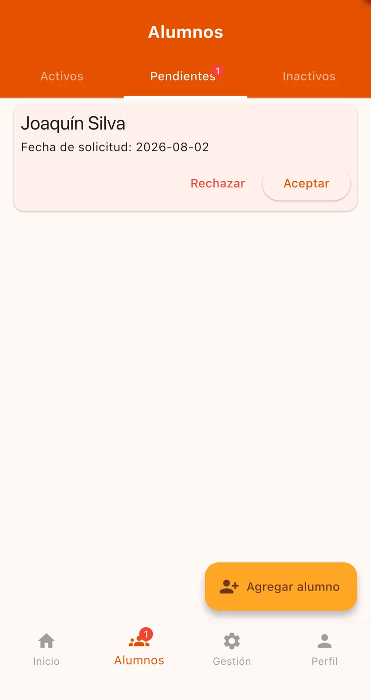
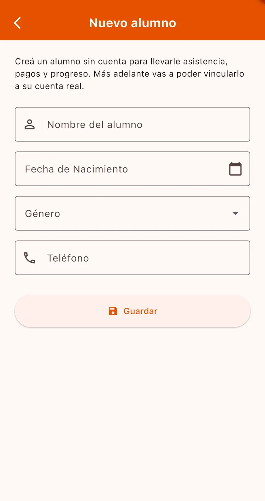
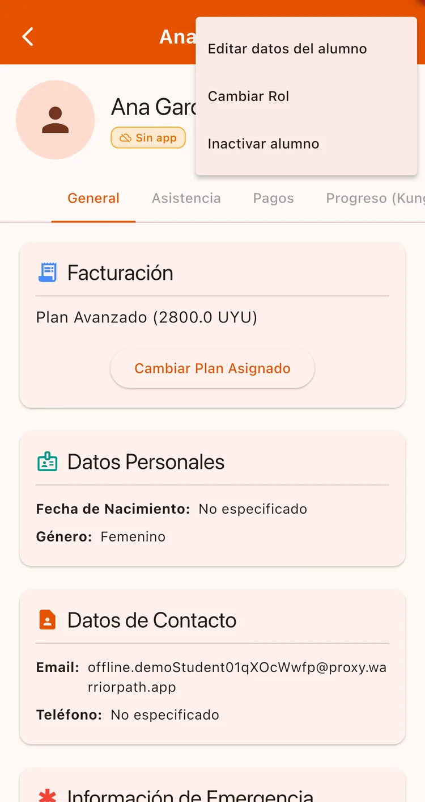

¿Para qué sirve?
Tus alumnos pueden llegar de dos formas: postulándose ellos desde la app, o cargados por vos si no la usan. Las dos conviven sin problema, así que no dependés de que todos tengan smartphone para llevar tu escuela ordenada.
Antes de empezar
- Tener la escuela creada y validada.
Paso a paso
Revisá las solicitudes pendientes
Cuando alguien se postula, te llega una notificación y aparece un punto rojo sobre la pestaña Alumnos. También lo ves en la pantalla de inicio.

Aceptá o rechazá
Tocá Aceptar para sumarlo. La app te pide en qué disciplina inscribirlo y lo coloca automáticamente en el primer nivel.
Si rechazás, el alumno recibe un aviso y puede buscar otra escuela.

Cargá un alumno que no usa la app
En la pestaña Alumnos tocá Agregar alumno. Completá el Nombre del alumno (lo único obligatorio), y si querés su fecha de nacimiento, género y teléfono.
Ese alumno funciona igual que el resto para asistencia, pagos y progreso.

Editá o dá de baja a un alumno
Entrá a la ficha del alumno y usá el menú de los tres puntos, arriba a la derecha. Ahí podés editar sus datos (si es un alumno sin app), cambiarle el rol o inactivarlo.
Al inactivarlo deja de aparecer en las listas y el ranking, pero se conserva todo su historial: si vuelve, lo reactivás y recupera su progreso intacto.

Si compartís la escuela con otro profesor, cambiale el rol a Maestro desde el menú de su ficha. Va a poder gestionar alumnos, cobros y progreso igual que vos, pero no puede borrar la escuela ni cambiar el rol de otros maestros.
Inactivar conserva todo y es reversible. Eliminar borra el historial de ese alumno en tu escuela y no se puede deshacer: si vuelve, tiene que postularse de nuevo desde cero.